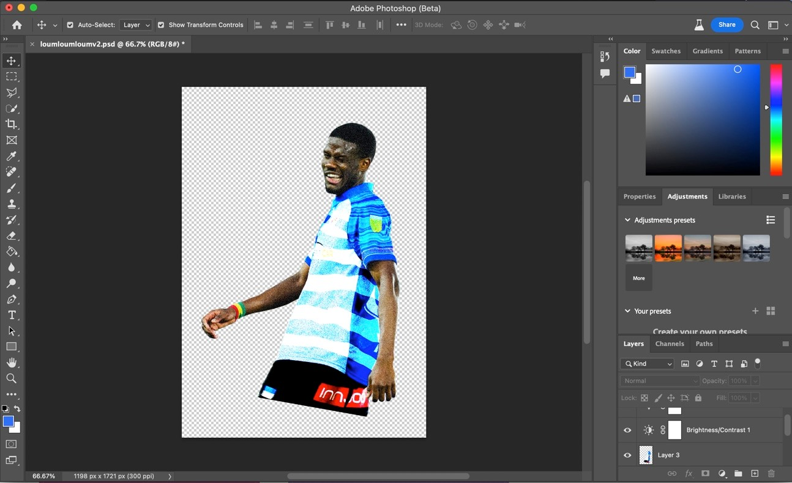
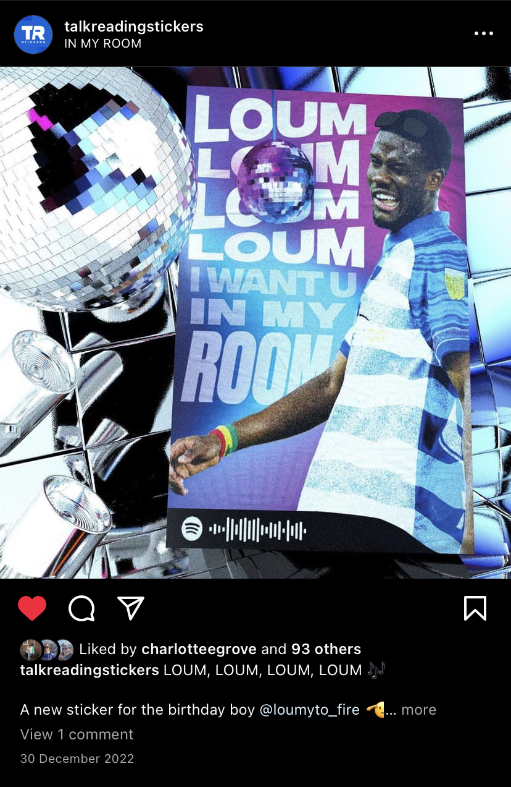
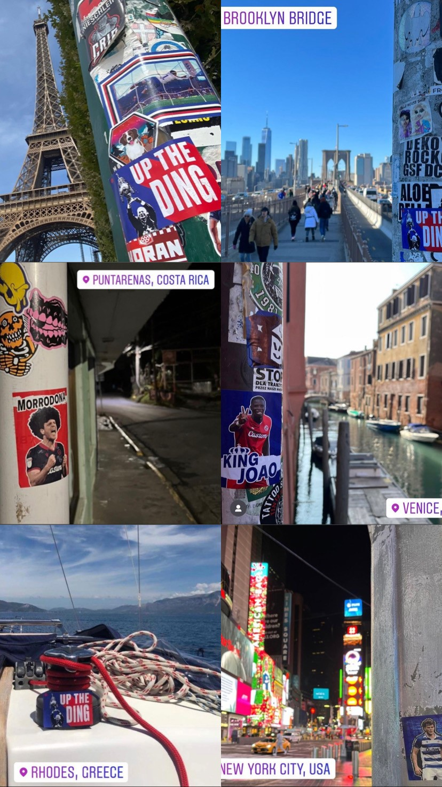

Reading FC: Murals & Player Promotion

Project Outline Statement
Background
Throughout my teens and early twenties I have been involved with the Reading Football Club community. The connections and relationships I built over that time provided me with the opportunity to work with the club on some exciting projects. One of those was to produce a series of murals for a new stand at the Select Car Leasing Stadium. One mural would stretch across a section of the stadium to commemorate one of the clubs previous managers. I was also commissioned to create a series of three murals that would be placed in the tunnel entries into the stand. I was free to design and consider the content of these murals by gathering a collective opinion across my community connections.
I was also handed a second opportunity to create a promotional media piece for a Reading FC player. This piece of media would be distributed across social network sites to promote the return of a player from injury. The design and energy of the video needed to be fast paced and energetic to reflect the player and his particular style. The club asked for the video to be short in length so it could be used in the 'story' feature that is various social platforms.
Date & Duration:
- August - October 2021 (Development & Release)
Project Goals & Challenges
Pain Points
- Producing a design that would be printed at a great scale. At the time this is something I had never done before. Research was needed to understand best practice and appropriate scales to use in order to keep resolution and image quality consistent
- There was significant pressure to make sure the mural design would be something accepted and liked by the Reading FC fanbase. The design would reflect either positively or negative on the club and myself
- Colour choices, the colours chosen by myself needed to be compatible for large CMYK prints. Previously, my primary experience had been in producing digital RGB designs which are generally seen to be much more forgiving in understanding how the final product will look.
Goals
- To produce a design that would be embraced by the Reading FC fanbase
- To execute the mural brief and provide the Select Car Leasing stadium with an exciting visual design that the club can be proud of
- To create an exciting promotional video that improves my design software skills and produces a much more professional final product
Mural Development
Designing for Print
A big part of this project was making sure that the colour choices and sizes would work on a large scale. In order to keep resolution and image quality consistent an appropriate scale needed to be used. This allowed for the file size to be realistic, this helped me effectively create the design on my personal laptop without it struggling to perform. If the incorrect scale was used the resolution of the image would be too small and would therefore print at a lower quality.
The colours also needed to be heavily considered. In order for the colours to accurately print as expected I had to run through a range of colour print books. This helped provide me with a prior understanding as to what certain colours would look like when printed. The image below shows the following considerations..
- Using dynamic text that matches the energetic imagery used within the designs
- A range of colours that match the kits used by Reading FC at the time
- 'Easter Egg' graphical elements were also implemented, these details woukd then be able to be seen when the murals were on show at full size

Idea behind the design
The design idea that was applied to the series of tunnel murals focused around fan favourite moments. In order to understand which moments should be used an online poll was created to help represent moments that really mean something to the fanbase. Using this approach helps fans have a personal connection to the designs, as they have had a part in choosing the subject matter. As the club has entered a turbulent and difficult time, the club felt we needed to focus on something to uplift the spirits of the fanbase. The mural placed within the stand follows a similar approach. Deciding to represent a former manager on this design was the clubs idea. They again wanted to celebrate the past success of the club and pay respect to a former leader and coach. Explained below are details on each mural created and their outcome.
Mural Outcome
The final outcome proved to be very successful. The fanbase were very positive in their interaction with the murals on social media. The football club have also been regularly using the murals as a focal point on social media. In the run up to matchdays the club will promote the fixture through videos and photos of the murals.
Coppell's Corner: This mural stretches across two sections and makes use of a strong colour contrast between blue and white. I felt this was a suitable colour option to use to match the home kit of reading football club. As typography was central to this design I used a bold sans serif font that was striking and bold. The select car leasing stadiums capacity currently stands at 24,000 making it one of the larger stadiums in the football league. I wanted to make sure that all fans sat in the stadium, no matter what section they were in, could see the mural clearly. In order to support this I made the typograhic title the focal point of the design, using the largest text size possible. Since it's installation I have been told by friends that the design is legible from all areas of the stadium.
The Super Sub: This design centers around the former Reading player Adam Le Fondre. Le Fondre become known for his excellent performances after being subbed on from the bench. Especially during the 2011/12 season where Reading were successful in gaining promotion to the Premier League. This design takes imagery from a famous victory against Southampton which has become folklore amongst Reading fans.
The Record Breaker: The record breaking mural brings attention to the record breaking season where Reading achieved 106 points in the 2005/06 season. This was sealed by the picture Graeme Murty after his converted penalty. This again, energetically presents another famous moment for Reading FC.

The Simod Cup: This mural displays Reading FCs only trophy win in the 1987/88 season. In a more retro fashion this mural uses a mix of white and yellow to reflect the kit colours of the time. This visual taste of victory can bring some inspiration to the current Reading fanbase.
Mural Promotion Example: Shown below is an example of the Reading FC social team promoting the murals via Reading FCs Instagram account.
Following the completion of the mural work for the club I was offered the chance to create a tifo banner (tifo's are any fan choreography conducted before a particular fixture). This tifo was created to show support for the club. My work in this side project involved designing the text elements, producing large scale designs similar to the process used for the murals.
Shown below is a closer look at the sizing of the banners created.

What I learned from this project
- Producing large scale/print designs is a process of trial and error. A great deal of testing has to take place in order to ensure positive outcomes and results.
- Making designs that mean a great deal to a particular group of individuals produces a significant amount of pressure. Making sure I follow rigarous research steps helps make sure the design subject matter chosen will be appropriate for the viewer. In this case, sending out a premptive poll helped the Reading fans have a real contribution.
Player Promotion Development
Designing for Animation
Designing for animation is different to designing for static imagery. You always need to keep the final product and vision in mind. In this case I had an idea to jump to different coloured backgrounds that featured a series of words to create a phrase. This would eventually produce a video that was fast paced, dynamic and energised. The image below displays the graphics I had storyboarded to map out the colours and frames of the video. The graphical boxes, icons and text/icons have also been created at this stage to later be animated within Adobe After Affects.

Software Mixing
Using Cinema 4D allowed me to produce motion graphics that were far more extensive than what Adobe After Affects could offer. Below you can see how the "back" used within one section of the video had been applied to a 3D model. Through model manipulation I could then create motions that would alter the shape and movement of the text. The video below displays an example of the movements applied to the model in Cinema 4D. This was then transferred to After Affects so that colours could be applied in order to mix in with the background of the storyboard. The end product (shown further down this page) displays how this affect came together to produce something visually unique.
Shown below is a glimpse of the After Affects documents used to piece together the various elements of the video. We can see how a range of material brought in from Photoshop, Illustrator and Cinema 4D have been applied to a single production. By making these elements seperately I was then able to apply seperate motions for them within After Affects. This created for a more exciting composition whilst also making it easier for me to trial and test various affects within After Affects.
Player Promotion Outcome
The final outcome of the video proved to be a great success. The various planning stages including producing storyboards, seperate bespoke imagery and graphical elements pieced together to make a short enticing video. Please see the final production below.
List what I learned from this project
- How to effectively use multiple design softwares together to produce one industry standard piece of work
- I built up more skills and confidence in using Adobe products and Cinema 4D
- That effective planning and storyboarding can ensure that and idea that you have in your mind can easily become a reality
Talk Reading Stickers (Instagram: @talkreadingstickers)
Project Outline Statement
Background: Talk Reading Stickers is a small business run alongside myself and members of the Reading FC community. The idea was created following the start of struggles with the clubs performances. In an effort to raise spirits and get Reading fans celebrating the club, we decided to start releasing custom stickers that glorify players, managers and chants that have become synonymous with the Reading fanbase. We noticed a gap in this market and filled it with creative designs at a low cost for customers. The idea that fuelled this creation was a goal for fans to travel the world and post pictures on social media of locations where they have 'stuck' their stickers.
Date & Duration:
- March 2021 - Present
Stickers Development
I have personally created all of the sticker designs myself using both Illustrator and Photoshop. We have thought up design ideas as a collective and also by using public polls to help understand what the customer would want. I would then take an initial idea and build a creative design that would appeal to the Reading fanbase. In this particular case we have taken a former Reading player "Mamadou Loum" and created a design centred around a song/chant that is related to his name.
In the above and below images you can see how image manipulation alongside vector graphics has produced a colourful design that plays to the theme of pop/dance music. This player has a chant that runs to the song "Boom, Boom, Boom, Boom" by Vengaboys and I wanted to make sure the essence of that song carries through to the design. Another feature I added to the design was the Spotify code (shown in the bottom left of the sticker design). This allowed passers by to scan the code on the sticker and play the song there and then on their phone. It takes visual media and applies a unique audio experience providing customers with the chance to interact with their sticker.

Promotion & Outcome
One key element of the product release is the marketing approach. We wanted to make sure there was an awareness of our product amongst Reading fans. This would help sell our product and grow our brand. The images and videos below take you through some of our many examples of marketing material we have released.
Since the release, the stickers have proved very popular. Our designs have been posted across the globe to more than 30 different countries. We have released multiple batches of designs that have included 19 seperate designs. We have now sold well over 10,000 stickers to our fanbase and we plan to continue our progress into the future. Alongside this success we have also had past and current players share and order stickers from us. Including one season where the Reading team at the time were posting stickers around the dressing room during training and matchdays.
To help support the release of stickers we have created animated videos. These videos provide sneak peak previews of the upcoming designs. It also offers an alternative piece of media that jumps off the screen and creates a more enticing experience for followers and fans. In order to increase anticipation we also run free giveaways for our followers. This is a great technique to help spread awareness of our product. Fans and followers are able to have the chance to win a free pack of stickers if they follow our account and share our stroy across their socials. This helps bring up anticipation for our product whilst also growing our brand.
Shown below is an example of a sticker release image. This displays the new batch title alongside the latest designs to be released.

The Final Sticker:
Shown below is the final marketed image of the "Mamadou Loum" sticker. In this particular marketing design I used Adobe Dimension to create a 3D disco experience which would reflect the theme of the sticker.
As stated in the project description, our main goal was to stick our stickers across the world. Over the past few years we have now ticked off a number of countries. The image below displays our stickers in Paris, New York and Venice. It has been amazing to see how much our stickers have spread and the interaction it has gathered with fans.
List what I learned from this project
- Areas of the law, including using images legally within designs that are set for resale. This was very important information for me to understand in order to respect the work that photograhers create and to provide credit where it is due.
- Developed further experience in producing designs that were fit for CMYK printing. Making sure that colour and design quality would be consistent.
- How to work with and sell to the general public/specific audiences. It takes a great deal of skill and knowledge to understand public opinion and to make effective marketing and product design decisions that are in line with public/fan base opinion.
- How to work with suppliers and printers to help produce a quality product. During this project we worked with outsourced printers. I had to regularly communicate with them to understand cost and product decisions that would impact the quality of our product.
- How to interact with customers to deliver a quality customer service. We regularly had cases where orders were sent out to customers but never received. In those cases we were quick to resolve the issues and regularly offered free sticker packs to keep customers happy.